Star Trek
Adventures
1E
2E
Captain's Log
Menu
☰
Save
💾

font
++
font
--
Momentum
Pool
Threat
Pool
None
Yellow Alert
Red Alert
Blue Alert
Grey Mode
Black Alert
Cloak
▼ Condition
＋
Player
Character
＋ Tracker
＋ Trait
USS Winnipesaukee
TRAITS:
Story Notes
The story so far...
Players: